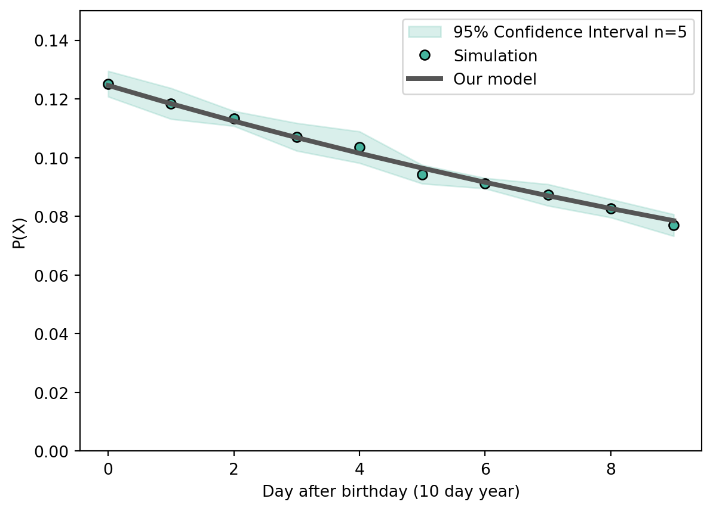

I recently attended a very enjoyable open-air performance of Shakespear’s Macbeth. Given my limited knowledge about the piece and English literature in general, I did the thing that most of the peers in my generation would do and I did a google search on William Shakespeare in advance. Unfortunately, I did not get far as it immediately caught my eye that Shakespeare potentially died on his birthday.1 How tragic!
But is it though? After thinking about it for a while, I came to the (for me) surprising conclusion that we might be statistically prone to die on our birthday… In this post, I will share with you my finding that in a model world, the most probable day for you to die will be your birthday.
Warning
Note that this post mentions sensitive topics such as death. While it focuses only on some mathematical features which happen to have a perculiar connection to death, this might be upsetting to some individuals. Please keep that in mind before you continue reading.
Modeling
Don’t believe me? Let’s start with a simulation.
Prior assumptions
In order to facilitate the computations, I will first create a simplified model world with the following assumptions/simplifications:
For every day in your life, it is equally likely for you to die.
This assumption is clearly not fully accurate. For example, infants or people above age 50 have a significantly higher chance of death than people in their twenties (see the official actuarial life table of the US social security office). A more appropriate yet significantly more complex model might assume that the likelihood to die steadily increases with age (e.g. Weibull distribution). However, it is probably relatively safe to assume that the likelihood to die is more or less smooth and changing slowly, i.e. we would not expect any sudden changes in the likelihood of death within an age cohort. As we will essentially compare the likelihood of death per day within the same year (i.e. the same age cohort), our model is probably still giving reasonable results. We also dismiss any seasonal changes (e.g. heat deaths in the summer or infections in the winter) that might affect the results.
Planet MB-15640423
In order to make the observed trends more significant, I will also assume for now that we observe life on a planet with very short year of only 10 days. However, the observed trends will also hold true any other length of the year, but might not be as obvious to see/would require significantly more sampling. To further simplify the computations, we also assume that our planet does not have any leap years.
The model
Based on these assumptions, we can create a simple simulation: We first define a function life that simulates the life of a single individual: For every day, the individual either survives or dies with a constant probability (here: \(p_{death}=0.05\)). For every individual, the function life runs until it reaches the day of death of the individual and then returns the number of days that the person survived (days_lived). We repeat that for a few thousand simulations (individuals) to get an estimation of the distribution. To estimate the variability of our simulation, we rerun this simulation 5 times.
We can figure out whether the individual died on their birthday or not by using the remainder (modulo operation) of the division \(\frac{\text{days lived}}{k}\). E.g. if a person died on their birtday, they survived 0, 10, 20, 30, 40… days in our model world. Thus, when dividing by the length of the year \(k\), the remainder will always be zero (Mathematically speaking: \(y\times k \equiv 0 \:\text{mod}\:k\) for \(y \in \mathbb{N}^0\)). If a person dies one day after their birthday, the fraction \(\frac{\text{days lived}}{k}\) will have the remainder 1 and so on…
Implementing this model in python (see hidden code cells) and plotting the results looks like this:
Code
# Import modulesimport numpy as np import pandas as pdimport matplotlib.pyplot as pltfrom scipy.stats import t# Parameterscolor='#45B39D'plot_params =dict( marker='o', linestyle='', markeredgecolor='k')n_individuals =10000length_of_year =10probability_of_death =0.05alpha_level =0.05n_replicates =5
Code
# Define functions def life(probability_of_death: float=0.05):""" Simulate length of a life given a constant probability of death every day """ days_lived =0while np.random.random() > probability_of_death: days_lived +=1return days_lived def run_model(probability_of_death: float=0.05, length_of_year: int=365, n_individuals: int=10000 ): """ Run model for a population of n_individuals and return probabilities to die on day x of life"""# Simulate n_individuals lives days_lived = [life(probability_of_death) for _ inrange(n_individuals)]# Get day of year (0-birthday, 1-day after birthday ...) day_of_year = [dl % length_of_year for dl in days_lived]# Count deaths per day of year days, counts = np.unique(day_of_year, return_counts=True)# Return normalized values (probabilities)return pd.Series(counts/np.sum(counts), index=days)
Code
# Run model multiple times to get estimate of uncertaintynp.random.default_rng(seed=15640423)replicates =list()for _ inrange(n_replicates): results = run_model(probability_of_death=probability_of_death, length_of_year=length_of_year, n_individuals=n_individuals ) replicates.append(results)# Deal with missing values replicates = (pd.concat(replicates, axis=1) .reindex(range(length_of_year)) .fillna(0) )# Compute mean and confidence interval mean = replicates.mean(axis=1)ci = t.ppf(1-alpha_level/2, n_replicates-1)*replicates.std(axis=1)/np.sqrt(n_replicates)
Code
# Plot fig, ax = plt.subplots(1,1, figsize=(7,4))ax.fill_between(range(length_of_year), mean-ci, mean+ci, alpha=0.2, color=color, label=f'{(1-alpha_level)*100:.0f}% Confidence Interval n={n_replicates}' )ax.plot(range(length_of_year), mean, color=color, **plot_params, label='Simulated probability of death' )ax.legend(loc='upper right')ax.axhline(1/length_of_year, 0, 1, color='#cccccc', label='Expected by equal chance' )ax.set_ylabel('Probability of death')ax.set_xlabel(f'Day relative to birthday in {length_of_year}-day year')ax.annotate('Birthday', xy=(0, mean[0]), xytext=(20,0), xycoords='data', textcoords='offset points', va='center', ha='left', fontsize=12, arrowprops=dict(width=1.5, headwidth=0) )ax.set_ylim(0,0.15)plt.show()
Observed number of deaths at a day X after birthday divided by the total number of individuals. The fill indicates the confidence interval of the mean from 5 replications of the simulations. The gray line indicates a null model in which the likelihood to die is independent of relation to your birthday.
What we see is that in our simulation/toy example, it is almost 30% more likely for an individual to die on their birthday than we would expect, if there were no relation to our birthday (gray line). Furthermore, the likelihood to die on day 1, 2, 3, … after a birthday steadily decreases. But why?
Intuition
The underlying concept is straightforward. On our birthday, we inevitably face an equal or greater likelihood of mortality compared to any other day. To elaborate, consider a scenario in which we analyze the lives of a whole population of individuals, as we did in our simulation. While most individuals would survive their actual birth date, regrettably, there exists a nonzero probability that someone might pass away precisely on that day, thereby decreasing the total population. Consequently, when the probability of death remains constant, fewer individuals, on average, will add to the count of deaths on the day following their birthday, and so forth. As the birthday will always be the first day in every new year, there will always more individuals have the chance to die at their birthday than any other day. This leads to the fact that sumed over the full population, more deaths will occur on birthdays than any other day.
Quick maths
We can also derive an analytical solution for this problem. Given the probability \(x\) to die on a certain day, the probability of survival said day can be written as counter-probability:
\[\begin{equation}
P(X: \text{survival on one day}) = 1 - x
\end{equation}\]
Assuming independence of events, the probability to die on the \(n\)th day of your life will be the product of probabilities to survive for \(n-1\) days times the probability to die on day \(n\):
\[\begin{equation}
P(Y: \text{death on day n}) = (1 - x)^{n-1}\cdot x
\end{equation}\]
Corresponding to an exponential decay. Now we know the probability to die on any day and can derive a formula to die on a birthday: For every year 0, 1 … \(\infty\), we will just add up the probability to die on the day corresponding to your birthday. So we need to add up the probabilities to die on day 0, day \(1\, \text{year} \times k\), day \(2\,\text{years} \times k\), day \(3\,\text{years} \times k\), …
Where \(x\) being the probability to die per day, \(k\in \mathbb{N}\) the length of the year, \(y=0, 1, ...\) the year after birth, and \(d=0, 1, ..., k-1\) the day after birthday (with \(d=0\) being the birthday and \(k-1\) the day before the birthday).
Plotting the analytical solution together with our simulated values provides a pretty decent agreement:
Code
def model(probability_of_death: float, length_of_year: int=365): """Implementation of our analytical model, assuming a constant probability of death """ day_after_bday = np.arange(0, length_of_year, 1) pdeath = probability_of_death/(1-(1-probability_of_death)**length_of_year)*np.power(1-probability_of_death, day_after_bday)return day_after_bday, pdeath day_after_bday, pdeath = model(probability_of_death, length_of_year) # Plotting fig, ax = plt.subplots(1,1, figsize=(7,5))# Confidence intervalax.fill_between(range(length_of_year), mean-ci, mean+ci, alpha=0.2, color=color, label=f'{(1-alpha_level)*100:.0f}% Confidence Interval n={n_replicates}' )# Simulationax.plot(range(length_of_year), mean, color=color, **plot_params, label='Simulation' )# Model ax.plot(day_after_bday, pdeath, marker='', linestyle='-', linewidth=3, color='#555555', label='Our model')ax.set_ylabel('P(X)')ax.set_xlabel(f'Day after birthday ({length_of_year} day year)')ax.set_ylim(0,0.15)ax.legend(loc='upper right')plt.show()

Overlay of our analytical solution and the simulation.
This confirms that the likeliest time for someone to die is any of their birthdays.
The real world
So we have a simulation, an analytical model for our observations and further an intuitive explanation for this phenomenom. However, all of this still happened in our model world MB-15640423. Are these preditcions actually relevant in real life?
No, they are not! Even if we take our extremely simplified model and plug in more or less realistic numbers (using the above mentioned population statistcs), we see that there is almost no difference (relative change) between the likelihoods to die on our birthday or even the most extreme opposite (the day before our birthday).
Although the statistical impact of this phenomenon is small, regrettably, there exists a genuine real-world occurrence known as the Birthday Effect, which suggests that individuals are more prone to passing away around the time of their birthdays than at other times. Yet, this correlation is rooted less in peculiar mathematics and more in tangible life factors, as the time around our birthdays is also associated with increased probabilities of alcohol and drug misuse, depressive periods, and other adversities that would be more fitting within the pages of a Shakespearean tale.
Conclusion
In this post we have looked at the somewhat surprising phenomenom that under some simplifying assumptions, our birthday will also be our most likely day of death. However, in the real world, this effect is negible, even when ignoring the many interferring factors that might lead to very different results.
Still, the general workflow behind this blog post might be transferable to other scientific endaveours and especially computational approaches: First, we observed an interesting phenomenom. We then started to build up an intuition for the problem by creating a model world/simulation, in which we tried to clearly articulate the underlying assumptions of our model. And finally, when we felt more comfortable with our intuition, we put in the effort and derived a more theoretically grounded model and intuitive explanation.
I hope that you learned a few things and that I could contribute to your collection of spurious knowledge. See you next time, and in the meantime, stay safe!
Footnotes
It should be noted that there is an ongoing debate about his alleged birthday (April 23) and he may have been born on a different day in late April. ↩︎